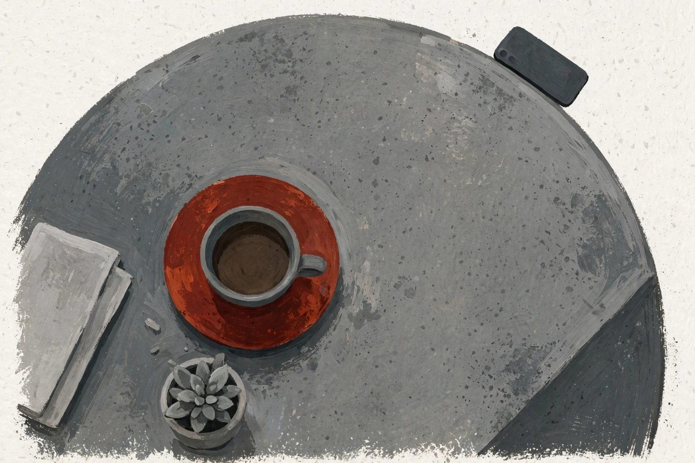

首頁 / 全部文章
ALL STORIES
全部文章
每一篇，都是一次小小的離題。

工作能力越好，事情為什麼越多？
會議室裡最常被點名的人，通常不是最閒的人，而是上次把事情收尾的人。能力被看見之後，接著被看見的，往往是你的行事曆還有空位。這篇不談如何拒絕，只談一件事：在答應之前，先替自己留一把空椅子。
你不是太能幹，是太難開口說不。

「你有空嗎？」我說有，其實根本沒有
從七點的鬧鐘開始，每件事都在等我回應。中午一個人走進麵店的那三十分鐘，是一天裡唯一不用回答任何人的時間。
一個人吃飯的三十分鐘，是今天唯一不用假裝有空的時間。
兩個小時的會，五秒鐘的 LINE
三十分鐘的會開了兩小時，三件事一件都沒確認，倒多了三場新的會。真正的決定，最後是下午四點的一則 LINE。
會議解決不了事情，因為會議從來不是用來解決事情的。

休息也有罪惡感的人，先練習把時鐘拿下來
躺下來不到十分鐘，心裡已經排好三件「等一下要做」的事。休息不是偷懶的同義詞，但為什麼身體休息了，心還在值班？
明明在休息，為什麼比上班還累？

都在同一張桌子吃飯，心都在手機裡
光是約到四個人都有空，就喬了兩個禮拜。結果火鍋上桌，我們把注意力給了每一個不在桌上的人。
好不容易約到的一頓飯，四個人，四個聊天室。
「已讀」之後的五分鐘，人在想什麼
訊息顯示已讀，對方還沒回覆。這五分鐘裡，傳訊息的人腦內小劇場可以演完一整季。我們到底在等回覆，還是在等確認？
等不到的那則回覆，真的有那麼重要嗎？
待辦清單越寫越長，事情越做越少
清單寫得越仔細，成就感來得越早，早到事情還沒開始做，就已經先累了。整理清單有時候是行動，有時候是行動的替身。
清單寫得越滿，心裡為什麼越空？
I'M FINE沒事
說「沒事」的時候，通常有多少事
「沒事」是中文裡最忙碌的兩個字。它要負責安撫對方、結束話題，還要把真正的心情，整齊地收進口袋裡。
那句「沒事」背後，到底藏了多少事？
這一題，還沒有人寫
換個關鍵字，或回到全部分類看看。也歡迎寫給我們。